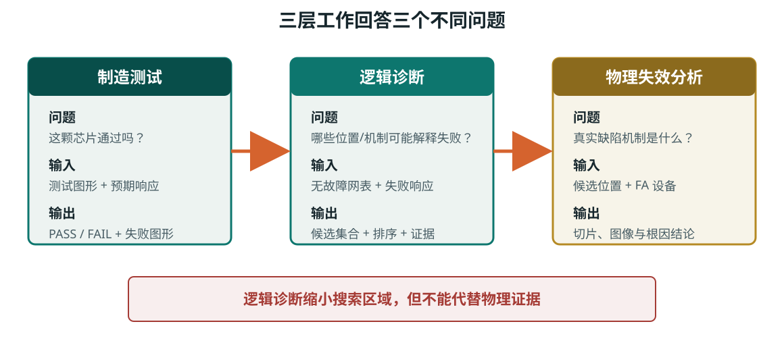
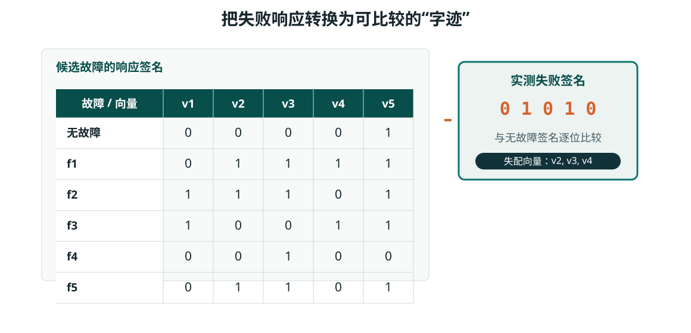
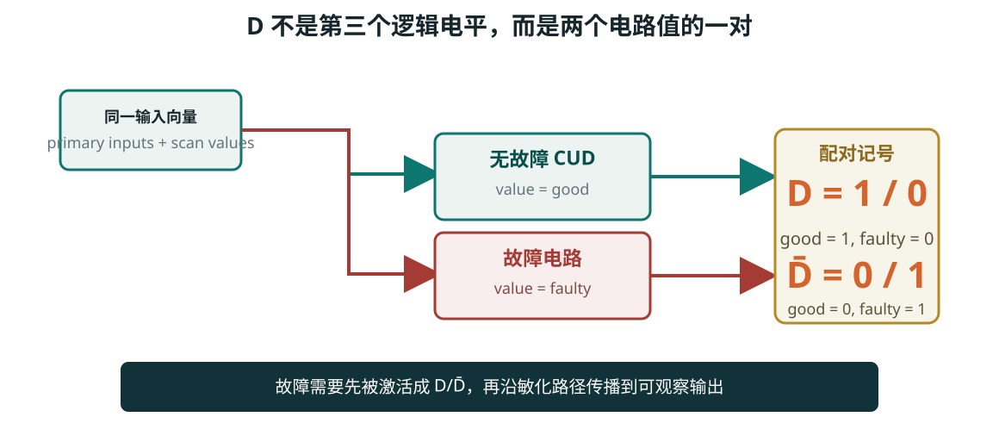
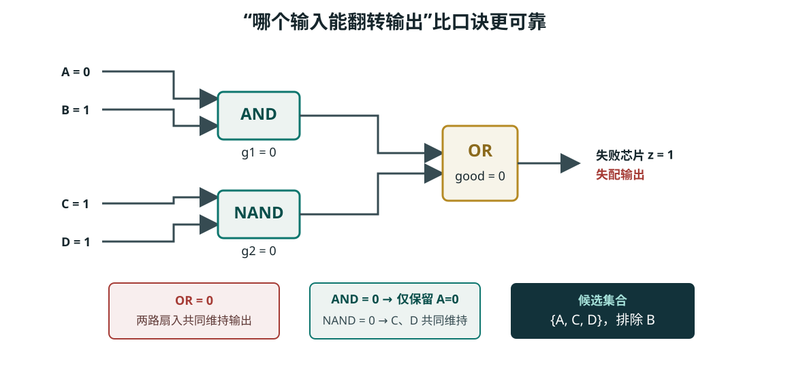
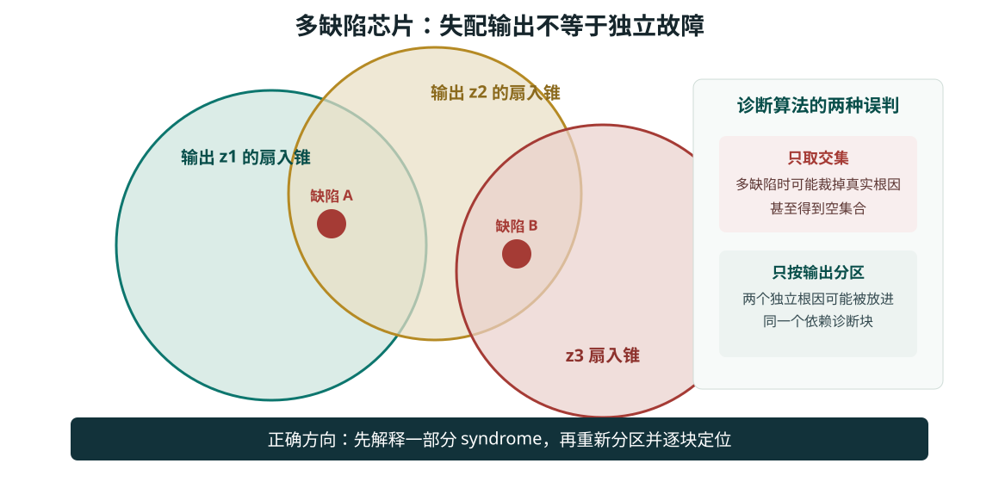
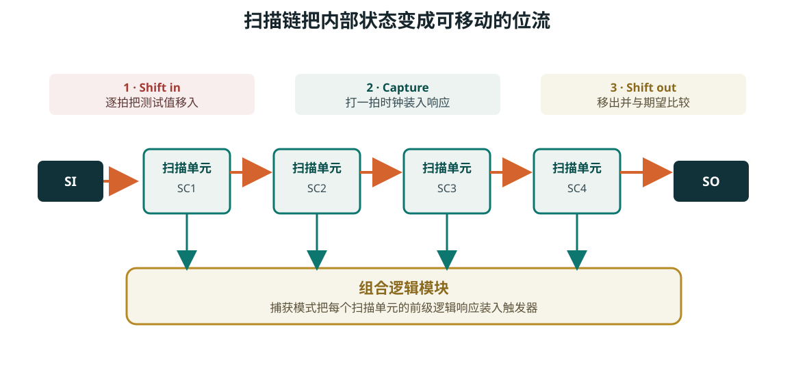
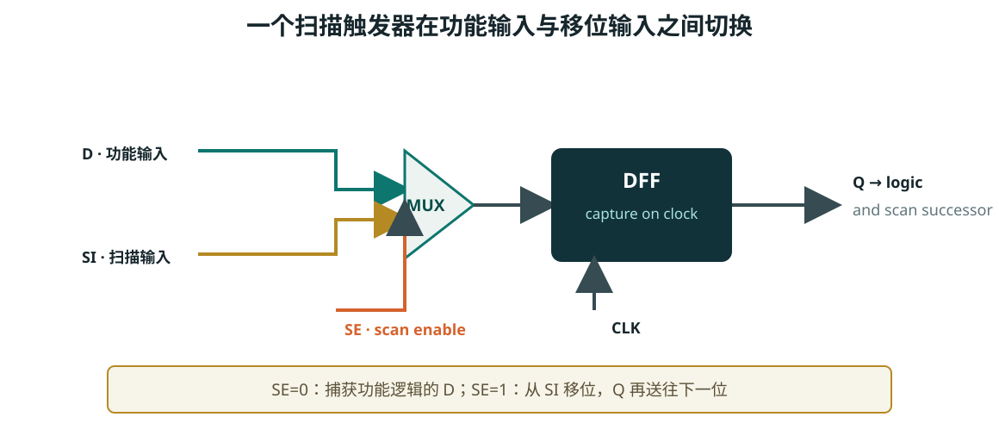
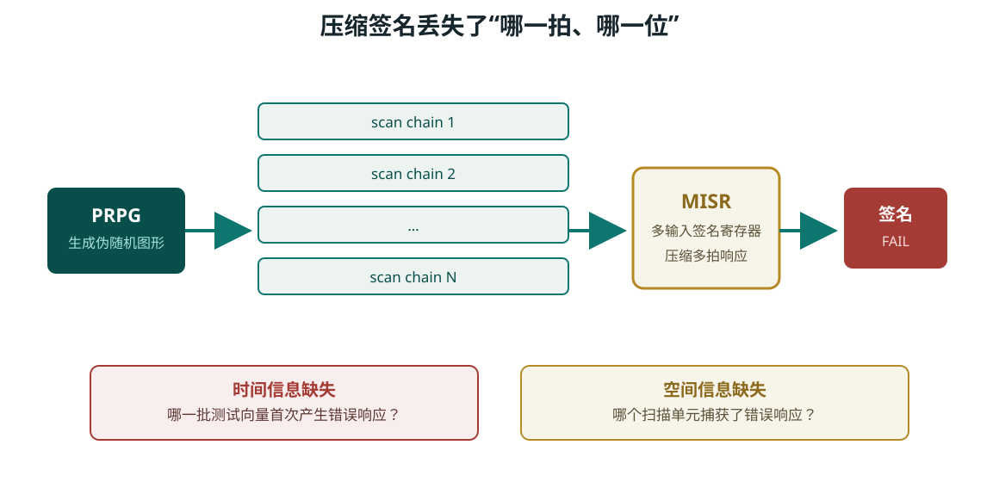
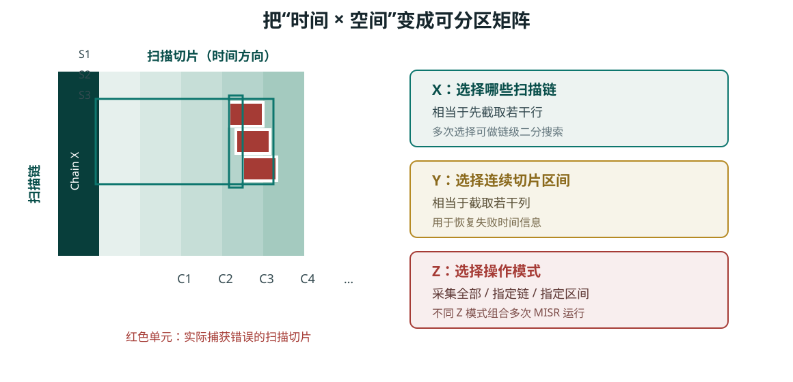

3 × 45 分钟纯理论课堂 · 3 个独立工程故事 · [1] 第 7 章
理论依据：[1] 第 7 章，印刷页 397–450
只剩 3 个失效分析名额，怎样从一整批失败芯片中挑出最值得切片的样品？
故障字典没有命中，而且芯片可能有两个缺陷，怎样保留并排序竞争原因？
逻辑测试失败但异常沿扫描链传播，压缩 BIST 又只剩签名，怎样恢复位置与时间？
预先模拟故障，用故障字典把真实失败签名映射到候选故障。
从失配输出反推扇入锥，再通过注入、排序和分区解释多缺陷。
扫描链和 BIST 压缩了时间或空间信息，诊断要重新把这些信息找回来。
[1] 7.1–7.5 节，印刷页 397–450
概念链依据：[1] 7.1 节，印刷页 397–400

越往右，证据越接近物理事实，但检查和设备成本也越高。
“问题在扫描链附近。”
没有具体候选、没有失败向量、没有排名依据，也没有说明模型遗漏。
候选 `{C17, DFF_42, net_183}`；按可修复向量排序；列出支持的测试向量、未解释输出和可能遗漏的桥接/多缺陷。
从测试判定、失败签名到故障字典与诊断分辨率。
“Lot L23 的良率从 91% 掉到 68%。测试机只告诉我们哪些 die 失败，我们却只有三个切片名额。”
交付物不是一句“可能短路”，而是一份候选位置排序，帮助 FA 工程师先检查最有把握的区域。
[1] 7.1 节，印刷页 397–401
C 表示 circuit under diagnosis 的无故障模型，F 表示真实失败芯片。相同输入下，对应输出组成一对。
C
F
只要某个输出对出现不一致，该测试向量就是失败向量；产生不一致的输出称为失配输出。
[1] Definitions 7.1–7.3，印刷页 400 与 406
保存每个向量、每个输出的实际值。信息最多，存储也最大。
保存每个向量、每个失配输出的位型。保留空间区分能力。
每个向量只保留通过/失败。查询更快，但可能合并不同候选。
由无故障模型在相同输入下仿真得到。它是所有比较的参照，不是“实际硅片一定正确”的证明。
至少一个输出对出现不一致的向量。失败向量定义的是观测事件，不等同于某个故障已经存在。
没有输出失配，但可排除会在该向量上产生新失配的候选，因此必须参与候选筛选。
[1] 7.1 节，Definitions 7.1–7.3，印刷页 400、406
若工具只输出完整排名而不输出候选集合，分辨率没有直接定义；应改用首次命中与 Top-N 命中。
[1] 7.1 节，印刷页 400–401
工具每次都只报告 1 个候选，但真实缺陷很少落在这个候选里。
分辨率 = 1，准确性很差。
工具报告 8 个候选，前三个覆盖大多数真实位置，并给出未解释证据。
分辨率不是 1，但 FA 队列更有用。
字典预先建立，单颗芯片查询快；适合固定型故障占主导、设计和测试集相对稳定的量产阶段。
网表或测试集改变可能需要重建；字典只能解释已经建模的故障。
[1] 7.2.1 节，印刷页 401–405
[1] 7.2.1 节，印刷页 401–403
故障点 × 每点故障类型。
失败与未失败向量都可能参与区分。
主输出与伪输出都计入。

诊断分辨率就是所有签名相同或无法区分的候选组大小。
比较 X 与 g，得到失败向量 v2、v3。
筛选 候选签名必须至少在相同向量上产生对应的失配。
报告 不能只报“v2 失败”，还要报失败输出和候选集合。
实测签名与 f5 一致，但 f6 也完全一致，因此候选集合不是 {f5}，而是：
{f5}
两个故障对所有可能输入产生完全相同的无故障/故障输出关系，可以在故障集合中折叠。
检测某个故障的测试集合也覆盖另一个故障时，后者在前者被检测的条件下不必单独考虑。
两个故障在当前测试集下签名相同。换一组向量后可能被区分，因此这种等价是相对于 V 的。
[1] 7.2.1 节与例 7.1，印刷页 402–405
每个测试向量回答一个“是/否”问题，沿分支不断缩小候选集合。
若测试集不足以区分两个故障，它们会落在同一个叶子，形成诊断等价类。
[1] 7.2.1 节，诊断树与字典压缩，印刷页 403–405
检查 v1 只按该输出值把全部候选分成两个组。
沿匹配分支 继续检查下一个能区分当前组的向量。
到达叶子 叶子可以只有一个故障，也可能是一组诊断等价故障。
0 1 1 0 1
[1] 7.2.1 节，例 7.1 与图 7.2，印刷页 402–403
保留每个向量、每个输出的 0/1，因此能区分“哪个输出错了”。
只保留向量级失败标志，多个不同输出模式会被压成同一列。
每个故障记录形如：
表示该故障在这些测试编号和输出位型上产生失败。
收集到 k 个失败记录后停止继续保存，降低字典规模。
代价是某些原本可区分的候选可能被合并。
[1] 例 7.4，印刷页 405
减少存储或传输形式，但不降低已建模故障的诊断分辨率。目标等价信息。
用更少信息换取更小字典，允许不同故障落入同一响应组。目标可接受损失。
[1] 7.2.1.1 节，印刷页 403–405
能拆开最大等价类的输出位，而不是任意丢失的输出位。
候选组大小满足 FA 队列需要，或达到存储上限。
用原始完整字典对照，确认恢复后的组确实被拆开。
[1] 7.1–7.2.1 节，印刷页 400–405
从结构裁剪、反向追踪、注入评估到诊断 ATPG。
“同一颗退回芯片在六条向量上失败，但没有一条故障字典签名完全匹配。客户认为是设计问题，制造团队认为是封装缺陷。”
这次不能再假定只有一个固定型故障。任务是生成竞争候选、解释哪些输出被修复，并设计新的区分实验。
给定一份失败响应和一个小网表，先说明单故障假设为何失败，再用结构裁剪、注入评分和诊断向量保留至少两个竞争原因。
阻性桥接、间歇性开路或多缺陷可能产生字典中没有的签名。
旧字典不再对应新网表、新测试顺序或压缩结构。
两个故障共同作用，不必对应任何单故障行。
[1] 7.2.2 节，印刷页 405–407
存储换查询速度。
计算换模型灵活性。
所有失配由一个根因解释；多个失配输出扇入锥取交集，分辨率高但假设强。
不同失配可由不同根因解释；先用并集保留候选，再尝试分区和原因消解。
一个物理桥接可能涉及多个信号，单个固定型故障不足以表达其行为。
[1] 7.2.2–7.2.5 节，印刷页 405–427

D=1/0
D̄=0/1
D 不是第三个电压电平，而是一个便于推理的双电路状态记号。
[1] 故障传播与敏化基础见第 4 章，印刷页 161–248；诊断反向追踪见 7.2.2 节，印刷页 405–409
给故障位置施加能使其错误值显现的输入条件。
沿路径给其他输入非控制值，让 D/D̄ 影响下游信号。
使故障响应与无故障响应不同；仅激活但被掩盖，不等于可检测。
[1] 第 4 章故障敏化与 ATPG，印刷页 161–248；第 7 章诊断反向追踪，印刷页 405–409
一个根因必须共同影响所有失配输出，所以取所有失配输出扇入锥的交集。
不同输出可能由不同根因造成，所以任一失配输出的扇入锥都不能提前删除。
[1] 7.2.2.1 节，例 7.6，印刷页 407–408
不能把某个口诀固定写在“输出为 0”或“输出为 1”上。应当结合门的控制值判断哪些扇入真正决定了当前输出。
只保留承担控制值的扇入；其他输入没有左右当前输出。
所有扇入都可能解释翻转，必须继续向上追踪。

B=1 是非控制输入，不应仅因在同一门上就被保留。
[1] 第 4 章门级敏化与 ATPG，印刷页 161–248；7.2.2.2 节，印刷页 408–409
单向量 反向追踪得到 {A,C,D}；这只是“可能影响输出”，还不是最终根因。
多向量 在单故障假设下对所有失败向量取交集；若交集为空，转向多故障。
下一步 对候选逐一注入故障值，检查能否复现实际 syndrome。
无故障信号值、失配输出、事件传播历史和每个候选的评估分数。
不必预计算所有故障签名；同一个无故障仿真结果可供多个候选复用，适合每个失败芯片单独分析。
[1] 7.2.2.3 节，印刷页 409–416
注入后某条原本失配的输出与失败芯片一致。
注入把原本正确的输出改坏了，说明候选制造了芯片未表现的行为。
该向量下所有原失配都被修复，且没有新增失配。条件最强。
0.5 是教材给出的启发式权重，不是物理定律，也不能代替独立验证。
[1] Definitions 7.5–7.7 与例 7.10，印刷页 411–416
无故障模型：(z1,z2)=(1,1)
(z1,z2)=(1,1)
失败芯片：(0,1)
(0,1)
当前只有 z1 失配。
z1 从 1 变 0：修复 1 个输出。
z2 从 1 变 0：新增 1 个失配。
rank2 = 1 − 0.5 = 0.5
严格满足“修复全部原失配且不增加新失配”的向量数量，优先级最高。
候选改善了多少具体失配输出，可作为次级证据。
候选制造了芯片未表现的新错误，应降低排序。
[1] 7.2.2.3 节、Definitions 7.4–7.7 与例 7.10，印刷页 409–416

多缺陷没有出现前，无法准确决定哪些候选属于同一个诊断块。
删除词级主候选已经完整解释的失配输出所对应的整个扇入锥，而不是只删输出节点；否则共享结构仍会把诊断块粘在一起。
[1] 7.2.3 节，印刷页 418–425
对每一个失败向量，该信号可达的全部失配输出都能被部分修复。它仍可能是 aliasing 候选，不等于结构上独立。
其可达输出集合不是另一个 SIC 点的真子集，减少被更上游候选覆盖的重复项。
要求候选能解释其输出组内的全部失配，进一步过滤局部 alias。
[1] Definitions 7.8–7.12，印刷页 420–425
目标是检测故障：有故障与无故障是否不同？
一个向量可以检测很多故障，但未必能把它们区分开。
目标是区分假设：候选 f1 与 f2 的输出是否不同？
需要构造能产生不同响应签名的新向量。
[1] 7.2.4 节，Definition 7.13，印刷页 425–426
至少一个输出不同，该向量可把 f1 与 f2 放入不同诊断组。
在该 ATPG 模型和约束下，两候选不可区分；报告应写“当前模型下等价”，不能写成物理等价。
被短接信号表现为逻辑 AND 的投票关系。一个强 0 可能覆盖其他节点的 1。
被短接信号表现为逻辑 OR 的投票关系。一个强 1 可能覆盖其他节点的 0。
某个驱动器占主导，使另一个受害节点跟随其值；故障可能随输入条件改变表现。
[1] 7.2.5 节与练习 7.3，印刷页 427、451
对每个失败向量和候选信号做单点注入，记录哪些修改能修复全部失配，形成失败向量 × 候选表。
寻找其 SLAT 向量并集覆盖全部失败向量的候选信号组（fault multiplet）；先从单点开始，再尝试两点或更高阶组合。
桥接缺陷在不同测试条件下可能表现为不同受害者信号，因此不能简单把它当作一个固定型故障。
[1] 7.2.2.3 与 7.2.5 节，例 7.11，印刷页 416–418、427
从快照/观测图像到区间、二分定位和确定性掩码。
“八条扫描链里只有 chain 5 异常。逻辑单元测试还能通过，但这条链每次移出都在固定位置之后失真。逻辑 BIST 只留下几个失败签名。”
问题不再是某个组合输出错了，而是扫描移入、捕获或移出路径上的一个单元可能污染后续整段位流。
给定一条扫描链和一组观测位流，先判断故障类型，再选择硬件反相、注入模拟、功能剖面、区间二分或确定性掩码中的一种证据路径。

扫描链故障可能发生在移入路径、捕获路径、单元本身或移出路径。

SE=0
SE=1
扫描链诊断必须先明确故障发生在 MUX、触发器、Q 路径还是下一段互连。
[1] 扫描结构基础见第 2 章，印刷页 55–69；扫描链诊断环境见 7.3.1 节，印刷页 427–429
一个单元在移位路径上会导致其后的位流连续改变，看起来像很多测试同时失败。
上游固定值可能掩盖下游单元和组合逻辑的真实响应。
逻辑诊断默认扫描链无故障；链异常时，不能把每个失配位都归因于组合逻辑。
某一捕获时刻，扫描触发器中真实的状态值。
无故障模型可以仿真得到，失败芯片内部通常不能直接读。
从扫描输出移出后看到的位流。
无故障时等于快照；有故障时，链上的移位过程会改变、掩盖或扩散状态。
[1] 7.3.1 节，Definitions 7.14–7.18，印刷页 427–430
链连接方向由 SI 到 SO，不能只凭位图的从左到右猜测。
仿真必须使用与 ATPG/ATE 相同的移位和比较约定。
候选位置要写清单元编号、链号和移位周期，避免“左边附近”。
[1] 7.3.1 节，扫描命令与观测图像，印刷页 428–430
某触发器输出永久为 0/1，固定位置之后的位流可能连续失真。
相邻或相关信号互相影响，位型可能是 AND、OR 或条件依赖。
setup/hold 或慢升/慢降造成图像依赖、温度和电压相关的间歇失败。
[1] 7.3.1 节，快照与观测图像，印刷页 427–430
全 0 或全 1 图像优先提示固定型方向；特定重复模式可能提示跳变或桥接。
单张全 0 位流不足以指出唯一触发器，也不足以证明物理机制。
位流为机制示意；“最右位先移出”等方向约定必须与你的 ATPG 和仿真设置一致。
[1] 7.3.1 节与图 7.23，印刷页 429–430
移入 16 个全 1；设定从 SI 数第 5 个扫描单元发生 stuck-at-0。
快照 受影响段形成 1111000000000000 的示意图像。
1111000000000000
反相 在移出前整体反相，边界变为可读的 0/1 跳变。
[1] 7.3.2 节，例 7.17，印刷页 430–432
候选故障要经过多时钟周期传播，不能只翻转组合网表中的一个信号值。
多个链故障可能产生相似甚至相同的观测图像，必须比较匹配得分和未解释位。
[1] 7.3.3 节，例 7.18，印刷页 432–434
让触发器获得接近均匀的 0/1 激励；扫描移出阶段则提供强烈的时间偏置。
SI-to-fault 段的频率分布会偏离无故障基线，而 fault-to-SO 段通常更接近正常。
[1] 7.3.4 节，Definitions 7.19–7.20，印刷页 434–441

测试通过压缩变得可承受，诊断却必须从未压缩的运行或分区中恢复证据。
错误响应序列经过压缩后得到与无故障签名相同的值，单个最终签名可能漏报。
不同时间、不同扫描单元的错误可能被映射到同一个签名，仅从签字无法反推来源。
改变种子、区间或掩码，让同一候选在多次签名中接受独立检验。
[1] 7.4.1 节，印刷页 442–443
哪一个测试向量或哪一段图形首次导致签名改变？
哪一个扫描链、哪一个捕获切片或触发器包含错误响应？
全量保存非压缩响应可以作为极端方案，但需要巨大的 ATE 存储和后处理带宽。
[1..8] 重跑 通过 → 首个失败在 [9..16]。
[9..12] 重跑 失败 → 首个失败在 [9..12]。
[9..10] 重跑 通过 → 首个失败在 [11..12]。
再分一次 定位到第 11 拍；最后移出该窗口的完整响应。
[1] 7.4.2 节，二分搜索示例，印刷页 443–446
运行次数少、顺序自适应，但要求 PRPG/模式计数器可从指定种子与位置重新开始。
一次保存多个区间，减少重跑次数，但增加测试设备存储与数据搬运。
[1] 7.4.2 节，例 7.21–7.22，印刷页 443–446
二分搜索可能需要多次 BIST 重跑；区间卸载尝试减少重跑。
保存非压缩响应或多个区间签名增加 ATE 存储和后处理。
更多分区、更多掩码或更多响应位可以恢复位置，但提高代价。
[1] 7.4.2–7.4.3 节，印刷页 443–449

红色单元是错误响应位置；诊断通过多次自适应分区把它与其他链、其他切片分开。
每次让不同子集进入 MISR，多次签名形成包含/排除证据。
实现简单、并行度高，但定位精度依赖掩码集合和错误数。
显式选择链集合与连续切片区间，通过自适应分区搜索空间。
可提供更强的位置保证，但需要更多控制、运行次数和测试设备配合。
N：扫描单元总数。
N
e：实际捕获错误的单元数。
e
N=64, e=2
2·2·log2(32)+4−1 = 23 次最坏情况运行。
2·2·log2(32)+4−1 = 23
[1] 7.4.3 节，印刷页 446–449
[1] 7.3.2–7.4.3 节，印刷页 430–449
先排除逻辑模式问题，再确定链故障类别；然后用独立实验缩小到链段，最后在 BIST 中恢复时间和空间。
每一层都要说明位序约定、测试模式、候选集合，以及为什么下一步实验能区分剩余假设。
以下材料只用于课程结构、叙事和图示方式的研究，不复制其正文、图片或习题。
GitHub 公开课程；采用“前站/当前站/下一站、工程问题、术语卡、检查点”的组织方式。用于观察课程故事链，不作为 VLSI 诊断技术依据。
公开课程项目仓库；展示故障仿真、LFSR 和边界扫描等小型实验对象。用于理解教学案例粒度，不采用其作业或代码内容。
高星开源 EDA 项目；其文档采用“概念—对象—命令—示例—限制”的组织方式。本课只借鉴解释顺序，不把工具文档当成课程理论结论。
[1] L.-T. Wang, C.-W. Wu, and X. Wen, Eds., VLSI Test Principles and Architectures: Design for Testability. San Francisco, CA, USA: Morgan Kaufmann, 2006.
[2] chenwei810, IC Design Introduction, GitHub, accessed 2026-11-25. https://github.com/chenwei810/IC_Design_Introduction
[3] laplaceyc, VLSI-Testing, GitHub, accessed 2026-11-25. https://github.com/laplaceyc/VLSI-Testing
[4] The OpenROAD Project, OpenROAD, GitHub, accessed 2026-11-25. https://github.com/The-OpenROAD-Project/OpenROAD
[1] 的章、节和印刷页码用于技术内容核对；[2]–[4] 仅用于课件编排观察，不替代教材、标准或实验结果。GitHub 的 stars/forks 只说明关注度，不代表课程质量或技术正确性。
本章按三节独立故事重写。每节都回答一个完整工程问题，但共同使用“故事—概念—机制—手算—边界—离堂题”模板。
本课先不讨论复杂现场。学生只需要回答：从黑箱失败数据到少量候选，第一层工具是什么。
这里刻意展示等价候选。让学生看到“查到一行”与“唯一定位”不是同义词。